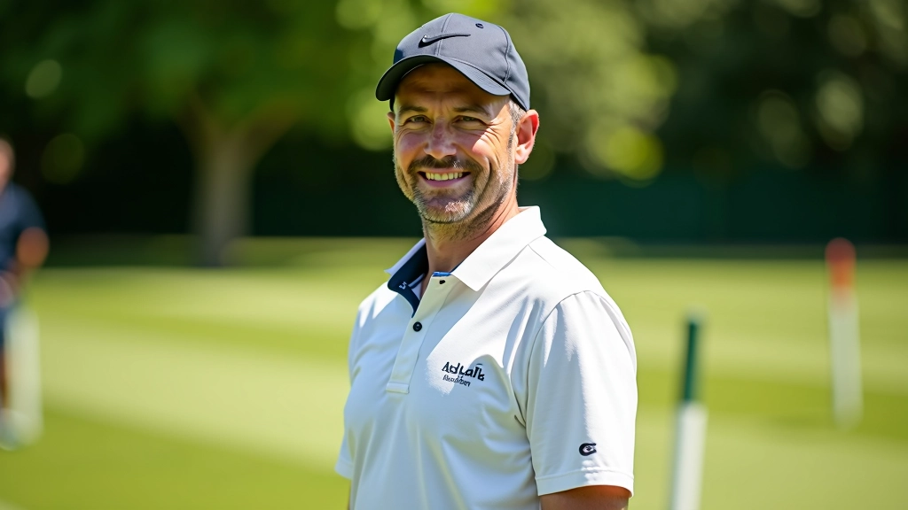
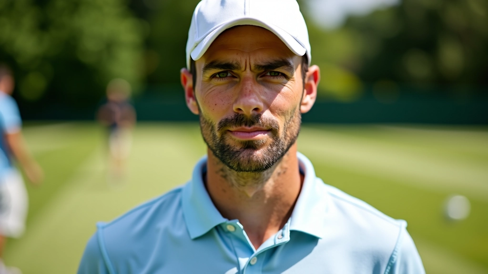
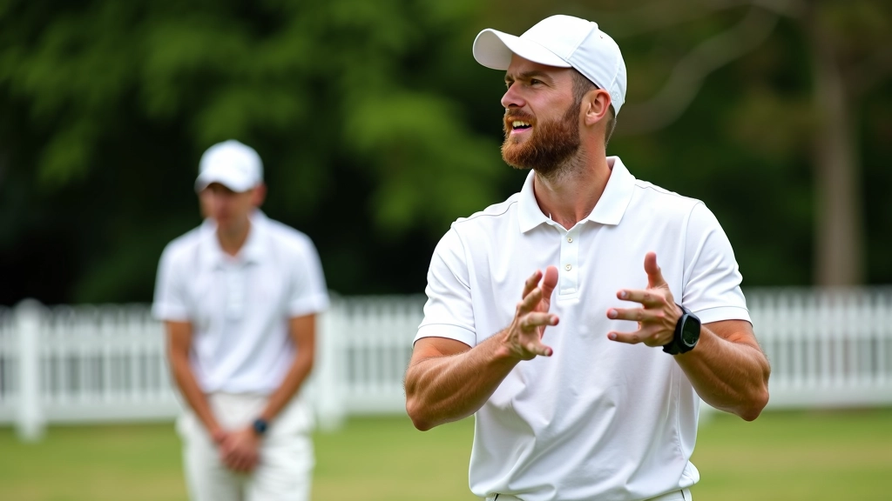
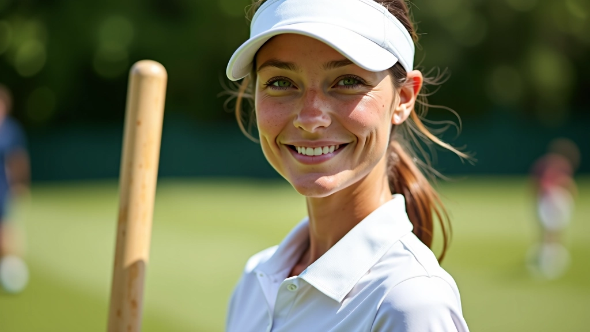
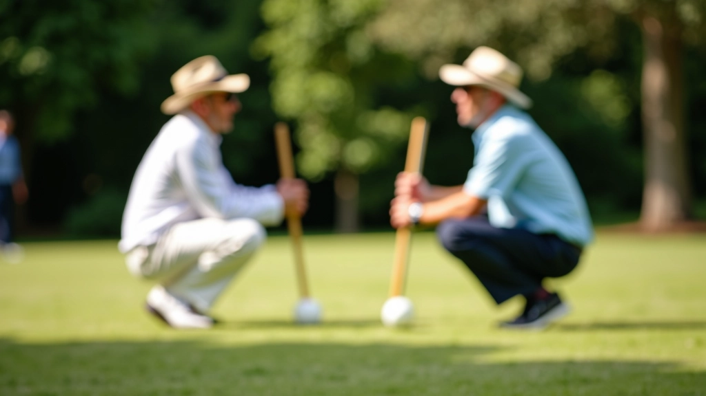
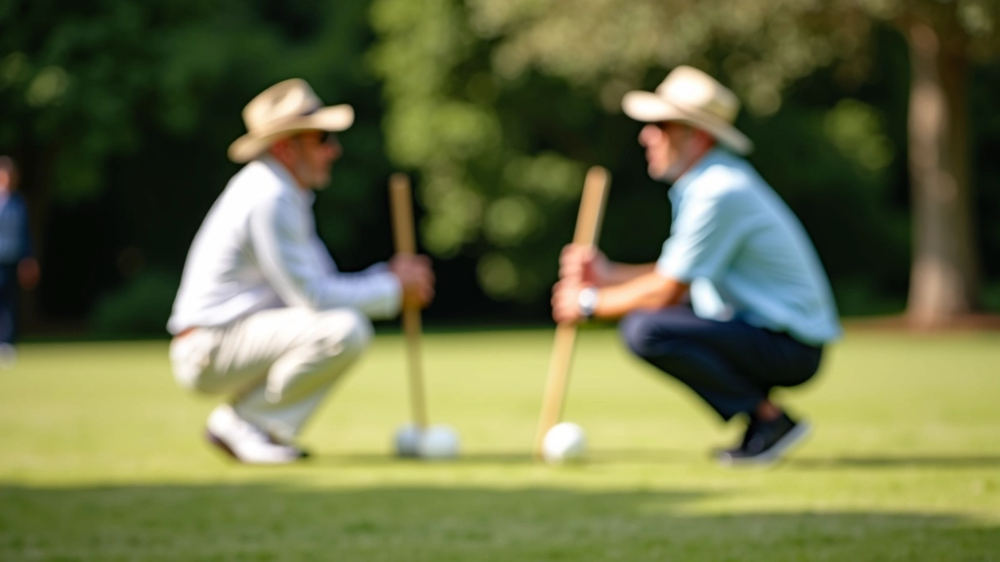

نظام الإشارات والتواصل الفعال بين الشريكين
اكتشف الإشارات والرموز المتفق عليها بين اللاعبين لتحسين التنسيق والفهم المتبادل.
تعلم كيفية فهم الإشارات الجسدية لشريكك وتحسين التنسيق بينكما بشكل ملحوظ
في الكروكيه، التواصل الصامت بينك وبين شريكك يمكن أن يكون الفرق بين الفوز والخسارة. إنّ قراءة لغة جسد شريكك ليست مجرد مهارة إضافية — إنها ضرورية. عندما تفهم كيف يتحرك شريكك ويقف ويشير برأسه، فإنك تستطيع التنبؤ بنواياه قبل أن ينطق بكلمة واحدة.
المشكلة؟ معظم اللاعبين لا يعرفون من أين يبدؤون. يركزون على تحسين ضربتهم أو حفظ القواعس، لكنهم يتجاهلون أهم أداة تواصل متاحة لهم: جسم شريكهم. في هذا الدليل، ستتعلم كيفية قراءة كل شيء — من وقفة الجسم إلى تعبيرات الوجه — وتحويل هذه المعلومات إلى ميزة حقيقية على الملعب.
ابدأ بملاحظة كيفية وقوف شريكك على الملعب. إذا كان واقفاً بشكل مستقيم مع رفع الأكتاف للخلف قليلاً، فهذا يعني أنه واثق من نفسه وجاهز للعب. لكن إذا كان ينحني للأمام أو يترنح من جانب إلى آخر، فقد يكون قلقاً أو غير متأكد من الخطوة القادمة.
الثقة لا تظهر فقط في الوقفة — بل أيضاً في سرعة الحركة. لاعب واثق يتحرك بسلاسة وحزم. تلاحظ هذا عندما يمشي نحو كرته أو ينتقل إلى موضع جديد على الملعب. إذا كان شريكك يتحرك ببطء أو تردد، فقد يكون يفكر في استراتيجية بديلة أو يعاني من الضغط.
الحيلة هنا؟ لا تنتظر حتى يخبرك شريكك بأنه قلق. لاحظ التغييرات الطفيفة في وقفته. هل بدأ يميل أكثر؟ هل أصبح أكتافه أعلى من المعتاد؟ هذه علامات مبكرة تخبرك أنه قد يحتاج إلى دعم معنوي أو إعادة تركيز.


الوجه يكشف الكثير عما يفكر به شريكك فعلاً. لاحظ العينين أولاً. عندما يركز لاعب على اللعبة، تراه ينظر مباشرة نحو هدفه أو نحو الكرة. النظر المشتت يعني أنه قد يفكر في شيء آخر أو يشعر بالقلق بشأن خطأ سابق.
الفم والفك أيضاً مهمان جداً. إذا كان شريكك يعض شفته أو يشد فكه، فهو متوتر. هذا شيء طبيعي عندما تكون المباراة حاسمة، لكنك تريد أن تلاحظ متى يصبح هذا التوتر مفرطاً. قد يحتاج إلى لحظة لتهدئة نفسه قبل الضربة التالية.
بالمناسبة، الابتسامة لا تعني دائماً السعادة على الملعب. أحياناً يبتسم اللاعبون عندما يكونون عصبيين أو يحاولون إخفاء الإحباط. انتبه للابتسامة الحقيقية — التي تشمل العينين — مقابل الابتسامة الصناعية. الفرق حقيقي وملموس.
هذا الدليل مخصص للأغراض التعليمية والمعلوماتية فقط. كل لاعب فريد، وقد تختلف طرق القراءة والتواصل من شخص إلى آخر. التطبيق الفعلي يعتمد على خبرتك الشخصية وعلاقتك بشريكك. يُنصح دائماً بممارسة هذه التقنيات في بيئة آمنة وتدريجية.
حركات اليد والرأس هي اللغة الفعلية التي يتحدث بها شريكك على الملعب. عندما يرفع يده بسرعة أو يشير برأسه، فهو يحاول إخبارك بشيء مهم. قد يكون محاولة لتحذيرك من حركة تكتيكية أو للإشارة بالموافقة على استراتيجية معينة.
الحركات البطيئة عادة ما تعني التفكير. عندما يضع شريكك يده على ذقنه أو ينظر للأعلى وهو يحرك رأسه، فهو يفكر في الموقف الحالي. هذا هو الوقت المناسب للصمت والانتظار. لا تزعجه بأسئلة أو اقتراحات. دعه يكمل تحليله.
هناك أيضاً حركات "القلق" التي تجب مراقبتها: فرك الأنف، الخدش على الرأس، تحريك الأصابع بسرعة. هذه تشير إلى عدم الارتياح أو القلق. إذا رأيت هذه العلامات، فقد حان وقت كلمة تشجيعية قصيرة أو لفتة معنوية بسيطة.


واحدة من أكثر العلامات موثوقية على الملعب هي كيفية تنفس شريكك. لاعب هادئ ومركز يتنفس ببطء وعمق. إذا رأيت شريكك يأخذ نفساً عميقاً قبل ضربة مهمة، فهذا علامة إيجابية. إنه يهدئ نفسه ويستعد للتركيز.
التنفس السريع والضحل، من ناحية أخرى، يشير إلى القلق أو الإجهاد. إذا كان شريكك يتنفس بسرعة، فقد يكون قلقاً من الفشل أو يشعر بالضغط الشديد. في هذه اللحظة، قد تحتاج إلى أن تكون دعماً نفسياً له. كلمة هادئة أو حتى لمسة على الكتف قد تساعده على الهدوء.
الاسترخاء الجسدي العام مهم أيضاً. إذا كان شريكك مشدود الأكتاف والرقبة، فهو متوتر. يمكنك تشجيعه على أخذ لحظة للاسترخاء — قد تكون فترة التوقف هذه كل ما يحتاجه للعودة إلى التركيز الكامل.
قراءة لغة جسد شريكك ليست عملية تحتاج إلى سنوات من التدريب المكثف. في الواقع، يمكنك البدء اليوم. كل ما تحتاجه هو الانتباه والملاحظة الدقيقة. ابدأ بملاحظة وقفته، ثم تطور نحو فهم تعبيرات وجهه، وأخيراً تعلم قراءة حركاته الدقيقة.
لا تقلق إذا لم تفهم كل شيء من المرة الأولى. الخبرة تأتي مع الممارسة. كل مباراة تلعبها مع نفس الشريك ستساعدك على فهمه بشكل أفضل. مع الوقت، ستصبح قراءة لغة جسده بديهية وطبيعية.
والأهم من كل شيء؟ تذكر أن هدفك ليس فقط تحسين أدائك على الملعب — بل بناء اتصال أعمق وأقوى مع شريكك. عندما تفهم ما يشعر به وما يفكر به، تصبحان فريقاً حقيقياً.
هل تريد تحسين تواصلك مع شريكك أكثر؟
اقرأ عن نظام الإشارات الفعالاكتشف الإشارات والرموز المتفق عليها بين اللاعبين لتحسين التنسيق والفهم المتبادل.

تعلم كيفية إدارة التوترات والاختلافات مع شريكك بطريقة صحيحة وإيجابية.

استكشف الطرق الفعّالة لبناء علاقة شراكة قوية وموثوقة على المدى الطويل.